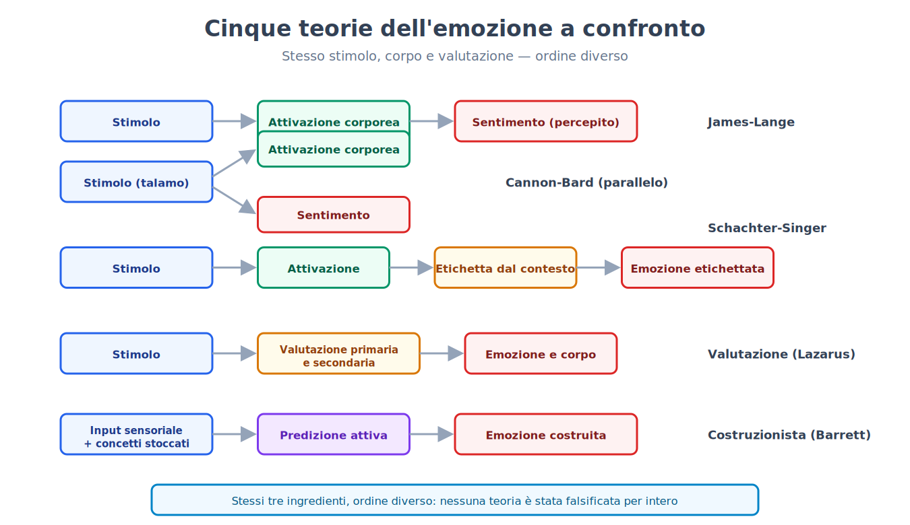
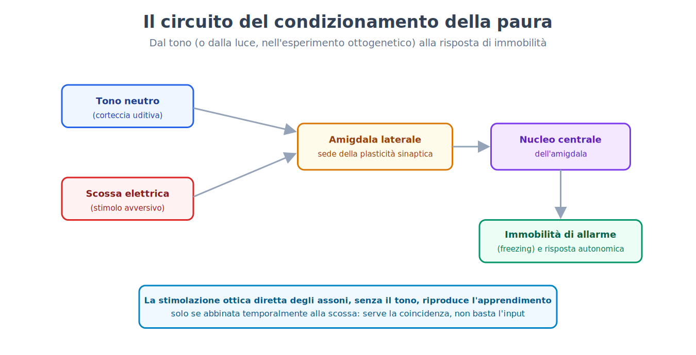
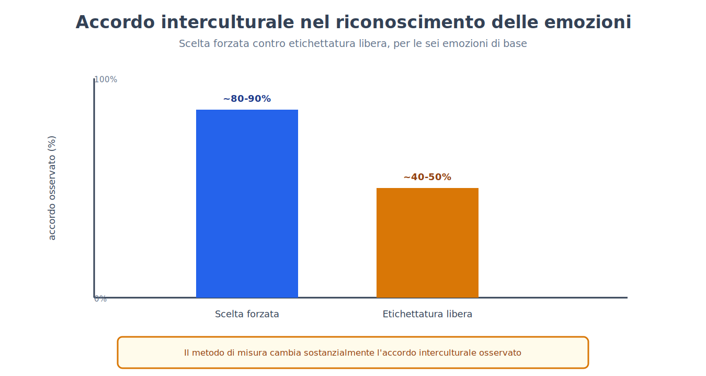
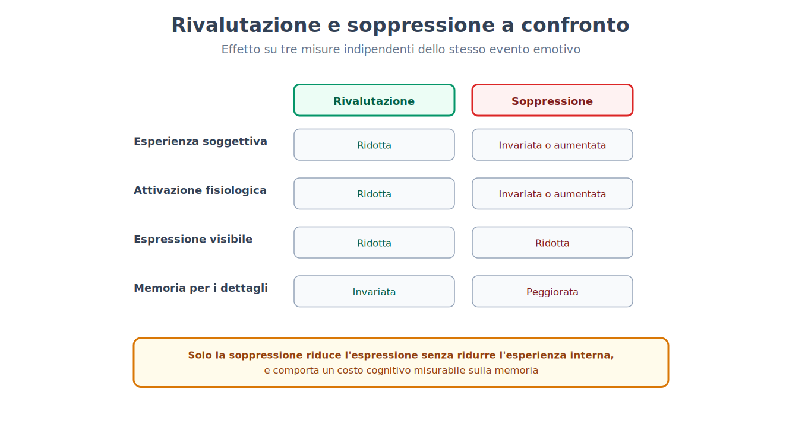
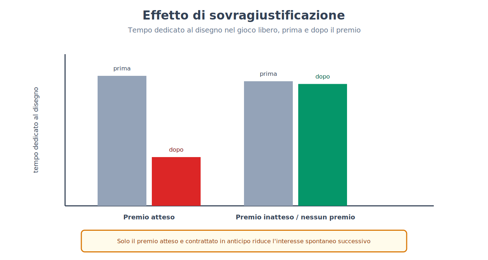
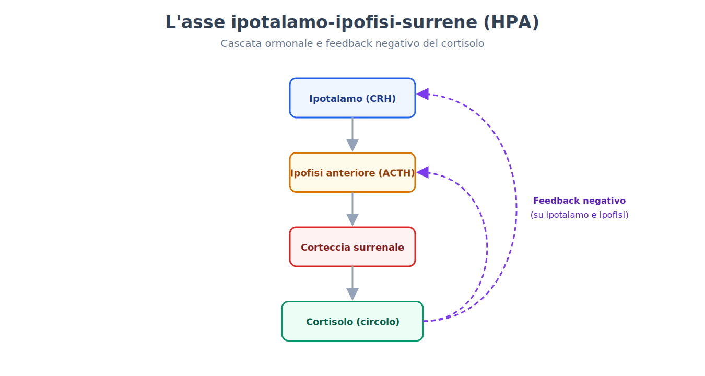
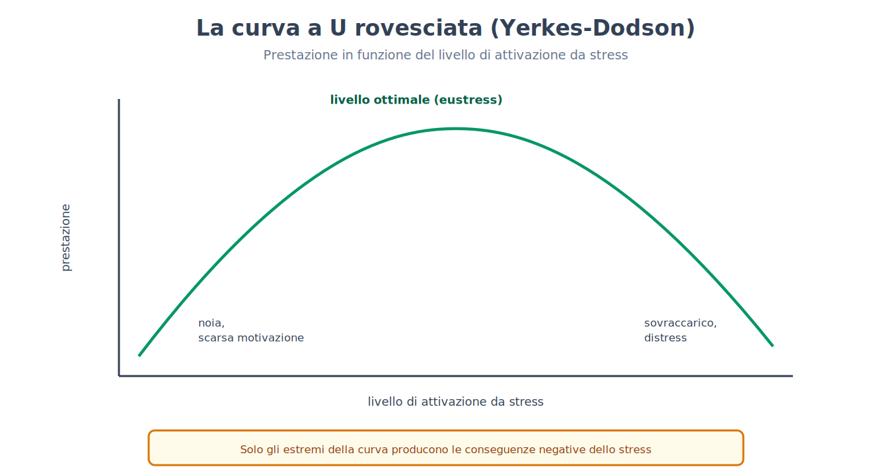

Parte VIII. Emozione e motivazione
Capitolo 48 — Che cos'è un'emozione
[IN DUE PAROLE]
Che cosa succede, esattamente, quando si prova paura o gioia? La risposta più intuitiva — prima arriva il sentimento, poi il corpo reagisce — è stata rovesciata, complicata e infine ricostruita più volte nella storia della psicologia. Questo capitolo espone le principali teorie in competizione, ancora oggi senza un vincitore netto, e perché persino misurare un'emozione con un semplice questionario può alterare ciò che si sta misurando.
Un ordine diverso per gli stessi tre ingredienti
Ogni teoria dell'emozione lavora con gli stessi tre elementi — uno stimolo nel contesto, uno stato corporeo, una valutazione cognitiva — e le teorie differiscono principalmente per l'ordine in cui li dispongono, non per l'elenco degli ingredienti.
La teoria periferica (peripheral theory, spesso associata al nome di William James e Carl Lange) propone l'ordine più controintuitivo: uno stimolo provoca prima un'attivazione fisiologica automatica (accelerazione cardiaca, sudorazione, tensione muscolare), e l'emozione soggettiva non è altro che la percezione di quella attivazione corporea. Non si trema perché si ha paura; si ha paura perché si trema. La teoria presuppone la specificità autonomica: ogni emozione dovrebbe avere una propria firma fisiologica distinta (paura: accelerazione cardiaca, aumento della pressione, sudorazione; tristezza: rallentamento cardiaco, respiro lento).
Una prima obiezione, nota come critica di Cannon-Bard, sottolineò, sulla base soprattutto di esperimenti su animali in cui i visceri erano scollegati dal cervello, che il comportamento emotivo restava intatto (negli esseri umani gli studi sulle lesioni del midollo spinale hanno dato risultati contrastanti: emozioni ridotte nei primi lavori, conservate in quelli successivi), e che i cambiamenti viscerali sono troppo lenti e troppo poco differenziati per spiegare la rapidità e la varietà delle emozioni provate. Il modello alternativo proposto — stimolo, poi elaborazione parallela e simultanea di attivazione fisiologica e sentimento cosciente, entrambe innescate dal talamo — evitava il problema della lentezza, ma lasciava aperta la domanda su come mai la stessa attivazione fisiologica generica possa essere provata come emozioni completamente diverse.
L'attivazione da sola non basta: serve un'etichetta
[IL DISEGNO DELL'ESPERIMENTO]
Nell'esperimento di Stanley Schachter e Jerome Singer (1962), ai partecipanti viene iniettata epinefrina (un ormone che produce attivazione fisiologica: battito accelerato, tremore, sudorazione), presentata come una vitamina, e sono divisi in due gruppi: a un gruppo viene detto onestamente quali sintomi fisici aspettarsi dall'iniezione, all'altro no. Ogni partecipante attende poi in una stanza con un complice dello sperimentatore che si comporta, a seconda della condizione, in modo euforico (gioca con oggetti, lancia aeroplanini di carta) o in modo rabbioso (si lamenta di un questionario, lo strappa). I partecipanti correttamente informati sui sintomi fisici attribuiscono la propria attivazione all'iniezione e riportano un'emozione lieve, indipendentemente dal comportamento del complice. I partecipanti non informati, privi di una spiegazione già pronta per la propria attivazione, tendono a riprendere l'etichetta emotiva suggerita dal contesto sociale: euforia in presenza del complice euforico, rabbia in presenza del complice rabbioso — la stessa identica attivazione fisiologica, etichettata in modo opposto a seconda del contesto.
Questo risultato è alla base della teoria dei due fattori (two-factor theory): l'attivazione fisiologica fornisce l'intensità dell'emozione, ma è la valutazione cognitiva del contesto a fornirne l'etichetta qualitativa — la stessa identica attivazione può essere provata come gioia, rabbia, paura o eccitazione, a seconda di che cosa la persona ritiene che l'abbia causata.
La valutazione del proprio rapporto con l'ambiente
Le teorie della valutazione (appraisal theories, associate soprattutto ai nomi di Magda Arnold e Richard Lazarus) spostano l'accento dalla semplice etichettatura di un'attivazione già presente a un giudizio valutativo che precede e genera l'emozione stessa: un evento viene valutato rispetto alla propria rilevanza per gli obiettivi personali (una valutazione primaria, che stabilisce se l'evento è positivo, negativo o irrilevante) e rispetto alla propria capacità di farvi fronte (una valutazione secondaria, che considera il controllo disponibile, l'aspettativa, l'attribuzione di responsabilità). La stessa notizia di un licenziamento può generare rabbia, sollievo o paura a seconda di come viene valutata rispetto a questi due assi — un elemento decisivo che i modelli puramente fisiologici non possono spiegare da soli.
Il cervello costruisce l'emozione, non la registra
Le teorie costruzioniste (constructionist theories, associate soprattutto al lavoro recente di Lisa Feldman Barrett) portano la prospettiva della valutazione un passo oltre: propongono che il cervello non riconosca passivamente un'emozione già presente nel corpo o nel mondo, ma la costruisca attivamente combinando l'informazione sensoriale del momento con concetti e ricordi già immagazzinati, in un processo di predizione continua piuttosto che di semplice registrazione. Lo stesso evento — per esempio un funerale con musica dal vivo e balli — può generare celebrazione o lutto puro a seconda dei concetti culturali disponibili alla persona che lo vive, non per una differenza nell'evento stesso.

Nessuna di queste cinque famiglie di teorie è stata falsificata nella sua interezza; ciascuna cattura un aspetto reale del fenomeno (la specificità fisiologica parziale, il ruolo dell'etichettatura cognitiva, la centralità della valutazione, la costruzione attiva di significato), e la sintesi contemporanea più diffusa combina elementi di valutazione e costruzione, senza negare un ruolo, per quanto meno rigido del previsto, alla specificità corporea.
Anche misurare un'emozione può alterarla
Il capitolo 1 ha introdotto il principio generale della reattività della misura (measurement reactivity): l'atto stesso di osservare o misurare uno stato mentale può alterarlo (1 → 48). Le emozioni offrono un caso particolarmente diretto di questo principio: un questionario sull'umore che chiede esplicitamente "quanto si sente triste in questo momento, da 1 a 10" non si limita a registrare uno stato preesistente, ma può indurre la persona a riflettere e a elaborare cognitivamente un'emozione che, senza quella domanda, sarebbe rimasta diffusa e non etichettata — un processo non troppo distante, nella sua meccanica di fondo, dall'etichettatura cognitiva descritta dalla teoria dei due fattori. La conseguenza pratica per la ricerca è che il metodo di misura (un questionario esplicito vs. una misura fisiologica indiretta vs. un'osservazione comportamentale) non è mai neutro rispetto al fenomeno misurato, e i risultati di studi sull'emozione che usano metodi diversi vanno confrontati con questa cautela in mente.
[IL PUNTO CHIAVE DEL CAPITOLO]
• Le principali teorie dell'emozione (periferica, Cannon-Bard, due fattori, valutazione, costruzionista) condividono gli stessi tre ingredienti — stimolo, corpo, valutazione cognitiva — e differiscono soprattutto per l'ordine in cui li dispongono.
• L'esperimento di Schachter e Singer indica che la stessa attivazione fisiologica può essere etichettata come emozioni opposte a seconda del contesto sociale disponibile; è un risultato molto citato ma debole nei dati originali e non replicato in modo netto, per cui la teoria dei due fattori è oggi considerata solo in parte sostenuta.
• Le teorie costruzioniste propongono che il cervello costruisca attivamente l'emozione combinando input sensoriale e concetti immagazzinati, piuttosto che limitarsi a registrarla.
• Il principio della reattività della misura, introdotto nel capitolo 1, si applica direttamente ai questionari sull'umore: la domanda stessa può alterare lo stato che intende misurare.
Capitolo 49 — Il circuito della paura
[IN DUE PAROLE]
Un topo può imparare a temere un suono in pochi abbinamenti con una scossa elettrica, e questo apprendimento è stato tracciato fino a un circuito neurale preciso. Questo capitolo espone il disegno sperimentale di questo apprendimento e, soprattutto, quanto di preciso questi risultati autorizzano a dire — e non dire — sull'esperienza soggettiva della paura.
Il condizionamento della paura: un caso applicato del capitolo 15
Il capitolo 15 ha introdotto il condizionamento classico e la sua reinterpretazione in termini di errore di predizione (15 → 49). Il condizionamento della paura (fear conditioning) ne è un'applicazione particolarmente studiata: uno stimolo neutro (un tono) viene ripetutamente abbinato a uno stimolo avversivo (una lieve scossa elettrica alla zampa, nei modelli animali), fino a quando il tono da solo, presentato senza la scossa, provoca una risposta di paura condizionata — nei roditori, tipicamente l'immobilità di allarme (freezing), uno stato di inibizione comportamentale attiva (non un semplice shutdown passivo) che riduce la probabilità di essere rilevati da un predatore e permette una pianificazione difensiva.
[IL DISEGNO DELL'ESPERIMENTO]
Nell'esperimento di Jeong-Tae Kwon e colleghi (2014), i ricercatori hanno espresso un canale ionico sensibile alla luce (channelrhodopsin-2) negli assoni che portano l'informazione uditiva all'amigdala laterale (provenienti dal talamo e dalla corteccia uditiva), e hanno sostituito il tono con la stimolazione ottica diretta di quegli assoni: sei abbinamenti di un lampo di luce blu con una scossa elettrica, in un contesto A. Ventiquattro ore dopo, in un contesto B mai associato alla scossa, la sola luce (senza scossa) provocava immobilità di allarme, dimostrando che l'apprendimento si era formato. Due gruppi di controllo — luce mai abbinata alla scossa, oppure luce e scossa presentate ma separate nel tempo — non mostravano alcun apprendimento. Poiché l'unico evento uditivo possibile era la stimolazione diretta degli assoni, e solo il gruppo con abbinamento temporale ha imparato, la stimolazione di quegli input basta a fungere da stimolo condizionato, e bloccare la trasmissione nell'amigdala laterale durante l'addestramento impedisce l'apprendimento. I dati sono compatibili con una plasticità a livello delle sinapsi tra quegli input e l'amigdala laterale; la prova diretta che la plasticità sia sufficiente, in quelle sinapsi, richiede altri esperimenti. La stimolazione dell'input da sola non basta: serve la coincidenza con l'evento avversivo.

L'amigdala emerge da questo e da numerosi altri esperimenti come la struttura chiave per la formazione di associazioni predittive tra stimoli neutri ed eventi emotivamente rilevanti — una funzione di apprendimento associativo che distingue l'amigdala da strutture come l'ipotalamo, che generano risposte più riflesse e meno modificabili dall'esperienza.
Che cosa questi risultati non dimostrano
[QUESTIONE CONTROVERSA]
Il condizionamento della paura nei roditori è uno dei paradigmi sperimentali più solidi e replicati dell'intera neuroscienza comportamentale, ma resta oggetto di un dibattito interno serio sulla sua interpretazione: che cosa autorizza a dire sull'esperienza soggettiva, cosciente, della paura? Una posizione, storicamente dominante, ha trattato il "circuito della paura" (amigdala e strutture connesse) come il substrato diretto anche del sentimento cosciente di paura, non solo della risposta difensiva comportamentale e fisiologica. Il neuroscienziato che più ha contribuito a isolare questo circuito, Joseph LeDoux, ha successivamente proposto una distinzione più cauta: i circuiti di sopravvivenza difensiva (che generano immobilità, fuga, attacco, e i correlati fisiologici della minaccia) sono ben caratterizzati e condivisi con altre specie, ma il sentimento cosciente di paura richiederebbe l'attivazione di processi corticali più ampi, legati alla consapevolezza esplicita, non necessariamente identici né riducibili all'attivazione dell'amigdala da sola. Un caso clinico rilevante per questo dibattito è quello di pazienti con calcificazione bilaterale dell'amigdala (per una rara malattia genetica): questi pazienti non riconoscono né provano paura di fronte a serpenti, ragni o case infestate, ma hanno manifestato un attacco di panico completo quando esposti a un'alta concentrazione di anidride carbonica inalata — un segnale che il sistema che genera la minaccia esterna visibile (mediato dall'amigdala) è distinto dal sistema che genera l'allarme per una minaccia interna, chemiosensoriale, che sembra instradato altrove. La conclusione condivisa da entrambe le posizioni è che l'amigdala non è "il centro della paura" in un senso semplice e unico: è una componente necessaria per una classe specifica di minacce esterne apprese, non l'unico substrato possibile del sentimento soggettivo nel suo complesso.
[IL PUNTO CHIAVE DEL CAPITOLO]
• Il condizionamento della paura applica al dominio emotivo il modello dell'errore di predizione già incontrato nel condizionamento classico generale (capitolo 15).
• Esperimenti di manipolazione diretta del circuito neurale (stimolazione ottica degli assoni che proiettano all'amigdala laterale) hanno mostrato che l'attivazione di input specifici all'amigdala laterale, abbinata alla scossa, basta a produrre l'apprendimento della paura, in modo compatibile con una plasticità sinaptica in quella sede.
• L'amigdala è necessaria per apprendere ad associare stimoli neutri a minacce esterne, ma i dati sui pazienti con lesione bilaterale dell'amigdala mostrano che non è l'unico substrato possibile della paura in generale: una minaccia interna (l'anidride carbonica inalata) ha prodotto panico in loro nonostante l'assenza di paura verso minacce esterne visibili.
• Il dibattito sul rapporto tra circuiti di sopravvivenza difensiva (osservabili, misurabili, condivisi con altre specie) e sentimento cosciente di paura resta aperto e richiede cautela nell'equiparare i due piani.
Capitolo 50 — Espressione e riconoscimento
[IN DUE PAROLE]
L'idea che alcune espressioni facciali delle emozioni siano universali, riconosciute allo stesso modo in ogni cultura del mondo, è diventata senso comune al punto da apparire ovvia. Questo capitolo espone gli studi interculturali classici che hanno sostenuto questa idea, e le critiche metodologiche più recenti che ne hanno ridimensionato la portata.
L'ipotesi delle emozioni di base
L'ipotesi delle emozioni di base (basic emotions hypothesis), sviluppata soprattutto nel lavoro di Paul Ekman a partire dagli anni Sessanta, propone che un piccolo insieme di emozioni (tipicamente rabbia, paura, sorpresa, tristezza, disgusto e felicità) abbia espressioni facciali specifiche, universali e di origine innata piuttosto che culturalmente appresa — un prodotto dell'evoluzione condiviso da tutta la specie umana, indipendentemente dall'esposizione a culture diverse.
[IL DISEGNO DELL'ESPERIMENTO]
Nello studio più citato a sostegno di questa ipotesi, Ekman e i suoi collaboratori mostrarono fotografie di volti che esprimevano le sei emozioni di base a membri della popolazione Fore della Nuova Guinea, un gruppo con contatto minimo o nullo con la cultura occidentale prima dello studio. Ai partecipanti veniva letto un breve racconto emotivo e veniva chiesto di scegliere, tra due o tre fotografie fornite dallo sperimentatore (un compito detto a scelta forzata, forced-choice), il volto che meglio corrispondeva. Il livello di accordo tra i partecipanti Fore e le risposte attese dai ricercatori occidentali risultò notevolmente alto per la maggior parte delle sei emozioni (con l'eccezione della paura, spesso confusa con la sorpresa), interpretato come prova diretta dell'universalità e dell'innatezza di queste espressioni.
Il metodo della scelta forzata nasconde parte del problema
[CONVINZIONE DIFFUSA]
Un'idea diffusa, spesso presentata come un fatto stabilito oltre ogni dubbio, è che le espressioni facciali delle sei emozioni di base vengano riconosciute nello stesso modo, automaticamente e senza ambiguità, in qualunque cultura del pianeta. I dati raccolti con il metodo a scelta forzata sono compatibili con questa idea, ma un limite metodologico serio ne complica l'interpretazione: quando ai partecipanti viene fornito un breve elenco di etichette tra cui scegliere, l'accordo osservato può riflettere in parte la capacità del compito stesso di restringere le opzioni plausibili, non necessariamente un riconoscimento spontaneo e privo di ambiguità. Studi più recenti che hanno sostituito la scelta forzata con compiti di etichettatura libera (chiedendo ai partecipanti di descrivere l'espressione con parole proprie, senza un elenco precostituito) o con misure di somiglianza percepita tra espressioni, hanno trovato livelli di accordo interculturale sistematicamente più bassi, e pattern di categorizzazione delle emozioni meno uniformi tra culture di quanto il metodo a scelta forzata suggerisse.
Universalità parziale, non uniformità totale
[QUESTIONE CONTROVERSA]
Il disaccordo tra ricercatori su questo tema non riguarda se esista una qualche base biologica condivisa per l'espressione emotiva — su questo c'è ampio consenso — ma quanto le sei categorie discrete di Ekman rappresentino accuratamente la struttura reale di quella base biologica. Una posizione, che difende sostanzialmente l'impianto originale, sottolinea che un accordo interculturale superiore al caso, per quanto ridimensionato dal metodo di misura, resta un dato solido e replicato con metodi diversi, e che le espressioni facciali restano tra i segnali sociali più rapidamente e consistentemente interpretati attraverso le culture rispetto a quasi ogni altro dominio comportamentale studiato. Una posizione più critica, sviluppata soprattutto nel lavoro di ricercatori come Lisa Feldman Barrett, Maria Gendron e Carlos Crivelli, sostiene che il grado di variazione culturale trovato con metodi meno vincolanti sia troppo ampio per essere liquidato come rumore statistico, e che la nozione stessa di espressioni emotive discrete, universali e automaticamente lette da un "decodificatore" innato sia un'estrapolazione eccessiva rispetto ai dati disponibili — la posizione costruzionista dell'emozione (capitolo 48) applicata al dominio del riconoscimento facciale. Entrambe le posizioni concordano su un nucleo di somiglianza interculturale superiore al caso; il disaccordo riguarda quanto quel nucleo sia ampio e quanto rigidamente sia organizzato in categorie discrete e universali.

[IL PUNTO CHIAVE DEL CAPITOLO]
• L'ipotesi delle emozioni di base propone un piccolo insieme di espressioni facciali universali e innate, sostenuta dagli studi interculturali classici di Ekman sulla popolazione Fore della Nuova Guinea.
• Il metodo a scelta forzata usato in quegli studi classici può gonfiare l'accordo interculturale osservato, restringendo artificialmente le opzioni di risposta disponibili.
• Studi più recenti con etichettatura libera trovano un accordo interculturale reale ma sistematicamente più basso e meno uniforme di quanto il metodo classico suggerisse.
• Il dibattito attuale non riguarda l'esistenza di una base biologica condivisa per l'espressione emotiva, ma quanto rigidamente essa si organizzi nelle sei categorie discrete e universali proposte dall'ipotesi originale.
Capitolo 51 — Regolazione emotiva
[IN DUE PAROLE]
Non tutte le strategie per gestire un'emozione indesiderata funzionano allo stesso modo, né allo stesso costo. Questo capitolo espone il confronto sperimentale tra due delle strategie più studiate, e perché il costrutto di intelligenza emotiva — enormemente popolare fuori dalla psicologia accademica — misura, nella pratica di ricerca, molto meno di quanto gli viene comunemente attribuito.
Rivalutare o sopprimere: due strategie, due costi diversi
Tra le strategie di regolazione emotiva (emotion regulation) meglio studiate, due ricorrono con particolare frequenza nella ricerca sperimentale: la rivalutazione cognitiva (cognitive reappraisal), che consiste nel reinterpretare il significato di una situazione emotivamente carica prima o durante la sua comparsa (per esempio, interpretare un esame difficile come una sfida stimolante piuttosto che come una minaccia), e la soppressione espressiva (expressive suppression), che consiste nell'inibire le manifestazioni esterne di un'emozione già in corso, senza modificarne l'interpretazione sottostante (mantenere un'espressione neutra pur provando intensamente l'emozione).
[IL DISEGNO DELL'ESPERIMENTO]
In una serie di studi di laboratorio, ai partecipanti vengono mostrati filmati con contenuto emotivamente negativo (per esempio scene chirurgiche esplicite), assegnati casualmente a una condizione di rivalutazione (istruiti a reinterpretare la scena in modo distaccato, per esempio come una ricostruzione cinematografica), a una condizione di soppressione (istruiti a non mostrare alcuna emozione visibile), o a una condizione di controllo senza istruzioni specifiche. Vengono misurate contemporaneamente l'esperienza emotiva soggettiva riportata, l'attivazione fisiologica (per esempio la conduttanza cutanea), e in alcuni disegni anche le prestazioni di memoria per i dettagli della scena. Nel disegno classico (Gross, 1998, con un film chirurgico) la rivalutazione riduce l'esperienza soggettiva negativa e l'espressione, senza aumentare l'attivazione fisiologica (altri studi trovano anche riduzioni fisiologiche, per cui il quadro è misto). La soppressione riduce l'espressione visibile dell'emozione ma non l'esperienza soggettiva, e può aumentare l'attivazione simpatica, e comporta inoltre un costo cognitivo misurabile: un peggioramento della memoria per i dettagli dell'evento, coerente con l'idea che sopprimere richieda risorse attentive continuamente impegnate nel monitoraggio della propria espressione.

Un costo ulteriore della soppressione, documentato in studi su interazioni sociali reali piuttosto che solo in laboratorio, riguarda il piano interpersonale: chi interagisce con una persona che sta sopprimendo la propria emozione tende a percepire l'interazione come meno autentica e più faticosa, un effetto che non si osserva nella stessa misura con la rivalutazione.
Un costrutto sovraccarico di aspettative
L'intelligenza emotiva (emotional intelligence), nella sua formulazione accademica originale (il modello di Peter Salovey e John Mayer), definisce una capacità relativamente circoscritta: percepire accuratamente le emozioni proprie e altrui, comprenderle, e usarle per facilitare il pensiero e la decisione. Misurata con test di prestazione (in cui esistono risposte oggettivamente più o meno corrette, non solo un'autovalutazione), questa capacità mostra correlazioni modeste ma reali con alcuni esiti di vita, distinte sia dall'intelligenza generale sia dai tratti di personalità.
[CONVINZIONE DIFFUSA]
Nella divulgazione popolare, a partire soprattutto dalla sua diffusione mediatica negli anni Novanta, il costrutto di intelligenza emotiva è stato spesso presentato come un predittore del successo nella vita — professionale, relazionale, personale — più potente del quoziente intellettivo tradizionale. Questa affermazione supera considerevolmente ciò che la ricerca sul costrutto, nella sua versione misurata con test di prestazione, ha effettivamente stabilito: le correlazioni trovate tra intelligenza emotiva e esiti di vita, una volta statisticamente controllate per l'intelligenza generale e per i tratti di personalità già noti (in particolare la coscienziosità e la stabilità emotiva), risultano generalmente modeste, non della portata suggerita dalla divulgazione popolare. Un problema metodologico aggiuntivo riguarda i questionari di autovalutazione dell'intelligenza emotiva (distinti dai test di prestazione), ampiamente usati nel contesto organizzativo e nella selezione del personale: questi strumenti misurano in buona parte la percezione che una persona ha delle proprie capacità emotive, non necessariamente la capacità stessa, e si sovrappongono in modo sostanziale con misure già esistenti di personalità, sollevando dubbi sulla loro validità incrementale, cioè sulla loro capacità di predire qualcosa che i test di personalità già consolidati non predicano già.
Questo schema — un costrutto psicologico con un nucleo di validità reale ma circoscritto, seguito da un'espansione popolare che gli attribuisce un potere esplicativo molto più ampio di quanto i dati sostengano — ricorda direttamente un pattern già incontrato a proposito dell'inconscio (51 → 31): anche in quel caso, un costrutto con solide basi empiriche in un dominio ristretto (i processi non consci descritti nel capitolo 31) è stato esteso, nella cultura popolare, ben oltre ciò che la ricerca sostiene, fino a farne una spiegazione universale per quasi ogni comportamento umano. L'intelligenza emotiva non è un costrutto vuoto — la sua versione misurata con test di prestazione ha una validità reale e circoscritta — ma il suo uso popolare ne ha sistematicamente gonfiato la portata esplicativa.
[IL PUNTO CHIAVE DEL CAPITOLO]
• La rivalutazione cognitiva riduce l'esperienza soggettiva negativa e l'espressione di un'emozione, con effetti fisiologici più incerti e senza costi di memoria nei disegni classici; la soppressione espressiva riduce solo l'espressione visibile, lasciando invariata o aumentata l'esperienza interna, con un costo cognitivo e sociale misurabile.
• L'intelligenza emotiva, nella sua versione accademica misurata con test di prestazione, ha una validità reale ma modesta una volta controllata per intelligenza generale e personalità.
• La versione popolare del costrutto ne ha sistematicamente gonfiato la portata predittiva, un pattern di espansione popolare oltre i dati già incontrato a proposito dei processi non consci nel capitolo 31.
• I questionari di autovalutazione dell'intelligenza emotiva, distinti dai test di prestazione, sollevano dubbi specifici sulla loro validità incrementale rispetto a misure di personalità già esistenti.
Capitolo 52 — Motivazione
[IN DUE PAROLE]
Perché si agisce? Alcune spinte all'azione derivano da squilibri fisiologici da correggere, altre da un segnale di apprendimento legato alla ricompensa, altre ancora sembrano nascere dall'attività stessa, indipendentemente da qualunque ricompensa esterna. Questo capitolo espone questi tre registri della motivazione, e come un effetto classico sulla forza di volontà non abbia retto a una verifica su larga scala.
La motivazione come effettore dell'omeostasi
Fame, sete e disagio al freddo non sono semplici sensazioni accessorie (la pressione al sonno del capitolo 26 ne è un caso affine): sono effettori comportamentali di sistemi omeostatici, ingegnerizzati dall'evoluzione per spingere l'organismo a correggere da solo una deviazione dal proprio equilibrio interno (livello di glucosio, bilancio idrico, temperatura corporea). Questo primo registro della motivazione — chiamiamolo motivazione omeostatica — condivide con gli altri sistemi di regolazione fisiologica la stessa struttura a sensore, centro di controllo ed effettore, applicata qui a un effettore comportamentale volontario piuttosto che solo autonomico o neuroendocrino.
La ricompensa come segnale di apprendimento, non solo di piacere
Un secondo registro riguarda la motivazione legata alla ricompensa, e qui il capitolo 15 aveva già introdotto, a proposito del condizionamento classico, il modello dell'errore di predizione (15 → 52): l'apprendimento procede non dalla semplice co-occorrenza di eventi, ma dalla discrepanza tra ciò che accade e ciò che era atteso. I capitoli 15 e 22, nel trattare il condizionamento e la neurochimica della ricompensa, avevano mostrato come questo stesso principio matematico, sviluppato per il condizionamento comportamentale senza alcun riferimento al cervello, trovasse un corrispettivo diretto nell'attività dei neuroni dopaminergici, che segnalano proprio l'errore tra ricompensa attesa e ricevuta, non la ricompensa in sé (22 → 52).
[FORMULA]
Una versione più generale di questo principio, sviluppata nell'apprendimento per rinforzo computazionale, estende l'errore di predizione a catene di eventi distanziate nel tempo, non solo a un singolo abbinamento stimolo-conseguenza:
δ_t = r_t + γ · V(s_{t+1}) − V(s_t)
Dove:
• δ_t è l'errore di predizione al tempo t (il segnale che, nel cervello, corrisponde all'attività fasica dei neuroni dopaminergici).
• r_t è la ricompensa effettivamente ricevuta al tempo t.
• V(s_t) è il valore stimato dello stato in cui ci si trova al tempo t, cioè quanta ricompensa futura ci si aspetta a partire da quello stato.
• V(s_{t+1}) è il valore stimato dello stato successivo.
• γ (gamma) è un fattore di sconto tra 0 e 1 che riduce il peso delle ricompense future rispetto a quelle immediate.
Esempio di calcolo. Si consideri una scimmia che sta imparando che una luce (stato s_t, valore stimato V(s_t)=0,2) precede in modo affidabile una ricompensa di succo di frutta (r_t=1) senza ulteriori stati intermedi rilevanti (V(s_{t+1})=0), con γ=0,9. Al momento della ricompensa: δ_t = 1 + 0,9·0 − 0,2 = 0,8. Il segnale positivo, elevato rispetto a una ricompensa di 1, riflette che la ricompensa è stata molto superiore a quanto il valore stimato dello stato prevedesse: l'animale ha ancora molto da imparare. Con l'apprendimento ripetuto, V(s_t) si avvicina progressivamente a 1 e δ_t si avvicina a zero: la ricompensa diventa pienamente prevista, e — come mostrato dalle registrazioni dei neuroni dopaminergici del capitolo 15 — il segnale dopaminergico alla ricompensa stessa scompare, spostandosi invece sullo stimolo predittivo (la luce) nel momento in cui compare per primo.
Fare qualcosa per il gusto di farlo, non per il compenso
Un terzo registro riguarda la distinzione tra motivazione intrinseca (intrinsic motivation), l'impegno in un'attività per la soddisfazione che deriva dall'attività stessa, e motivazione estrinseca (extrinsic motivation), l'impegno guidato da una conseguenza esterna separata dall'attività (un compenso, un voto, una lode). Un risultato controintuitivo, documentato ripetutamente, è che l'introduzione di una ricompensa esterna per un'attività già intrinsecamente gradevole può, in certe condizioni, ridurre la motivazione intrinseca originaria invece di sommarsi ad essa.
[IL DISEGNO DELL'ESPERIMENTO]
Nello studio classico di Mark Lepper, David Greene e Richard Nisbett (1973), bambini che mostravano già un interesse spontaneo per il disegno vengono divisi in tre gruppi: un gruppo riceve la promessa di un premio (un attestato decorativo) per disegnare, prima di iniziare l'attività; un secondo gruppo riceve lo stesso premio ma senza che fosse stato promesso in anticipo (una sorpresa, dopo aver disegnato); un terzo gruppo non riceve alcun premio. Nelle settimane successive, osservati in un contesto di gioco libero senza alcuna aspettativa di premio, i bambini del gruppo con premio atteso dedicano significativamente meno tempo spontaneo al disegno rispetto agli altri due gruppi, i cui livelli di interesse restano sostanzialmente invariati rispetto alla misura di partenza. L'interpretazione proposta è che la ricompensa attesa e esplicitamente contrattata sposti l'attribuzione causale del proprio comportamento dall'interesse intrinseco per l'attività alla ricompensa esterna — un effetto chiamato effetto di sovragiustificazione (overjustification effect): l'attività, un tempo fine a se stessa, viene ricategorizzata come un mezzo per ottenere qualcos'altro, e perde parte del proprio valore intrinseco una volta che quel qualcos'altro non è più garantito.

L'effetto non è universale: ricompense inattese, ricompense legate esplicitamente alla qualità della prestazione piuttosto che alla semplice partecipazione, e attività a bassissimo interesse intrinseco di partenza mostrano pattern diversi o assenti — un punto che ha alimentato un dibattito interno sulla reale portata pratica dell'effetto fuori dal laboratorio, per esempio nella progettazione di sistemi di incentivi scolastici o lavorativi.
Un effetto classico che non ha retto a una verifica su larga scala
[REGGE ANCORA?]
Per decenni, un modello influente ha descritto l'autocontrollo come una risorsa limitata che si esaurisce con l'uso, come un muscolo che si affatica — il fenomeno detto deplezione dell'io (ego depletion): dopo aver esercitato autocontrollo in un compito (per esempio resistere alla tentazione di mangiare un dolce), le persone mostrerebbero prestazioni peggiori in un compito successivo, non collegato, che richiede anch'esso autocontrollo. Il modello ha generato centinaia di studi e una popolarità considerevole, anche fuori dall'ambito accademico, come spiegazione di fenomeni quotidiani (la stanchezza decisionale, i cedimenti dietetici serali). Un tentativo di replicazione su larga scala, guidato da Martin Hagger, Nikos Chatzisarantis e colleghi (2016), con ventitré laboratori indipendenti in tutto il mondo che hanno seguito un protocollo concordato in anticipo e pre-registrato su oltre duemila partecipanti complessivi, ha trovato un effetto medio vicino allo zero, in netto contrasto con le stime di effetto medio-grandi riportate dalle meta-analisi della letteratura originale. Il modello nella sua forma originale non regge più a questa verifica su larga scala: la discrepanza tra le meta-analisi originali (basate su studi di laboratorio più piccoli e più eterogenei) e la replicazione pre-registrata è oggi attribuita soprattutto, secondo le analisi di correzione dei bias, a problemi di pubblicazione selettiva e a una definizione operativa della deplezione troppo variabile da uno studio all'altro; i sostenitori originali del modello hanno contestato il protocollo della replicazione, ma un test multi-sito successivo ha dato ugualmente un effetto vicino a zero. Resta aperta la possibilità che una versione più limitata o meglio specificata del fenomeno esista in condizioni specifiche, ma la forma generale e ampiamente popolarizzata del modello — l'autocontrollo come risorsa unica che si esaurisce in modo uniforme e trasferibile tra compiti molto diversi — non ha superato la verifica su larga scala.
Questo terzo registro della motivazione — l'attività fine a se stessa, la sua possibile erosione da parte di ricompense esterne mal calibrate, e i limiti reali (più modesti di quanto pensato) dell'autocontrollo come risorsa esauribile — si collega anche a un tema incontrato nella tradizione psicoanalitica: il capitolo 11 aveva descritto la coazione a ripetere come una spinta a ripetere un comportamento indipendentemente da un guadagno evidente (11 → 52), un parallelo strutturale, benché di origine teorica del tutto diversa, con l'idea che non tutta l'azione umana sia guidata da un calcolo di costi e benefici espliciti.
[IL PUNTO CHIAVE DEL CAPITOLO]
• La motivazione omeostatica, qui introdotta come effettore comportamentale, condivide la struttura generale della regolazione fisiologica.
• Il modello dell'errore di predizione, incontrato nel condizionamento classico (capitolo 15) e nella neurochimica della ricompensa (capitolo 22), si estende a catene di eventi distanziate nel tempo con un segnale che corrisponde all'attività dopaminergica fasica.
• L'effetto di sovragiustificazione mostra che una ricompensa esterna attesa può ridurre la motivazione intrinseca originaria per un'attività già gradevole, spostando l'attribuzione causale del comportamento.
• Il modello della deplezione dell'io, nella sua forma classica e ampiamente popolarizzata, non ha retto a una replicazione pre-registrata su larga scala con ventitré laboratori indipendenti, che ha trovato un effetto medio vicino allo zero.
Capitolo 53 — Stress
[IN DUE PAROLE]
Lo stress non è di per sé dannoso: in dosi moderate migliora l'attenzione e la memoria, e diventa un problema solo quando è cronico o non si spegne correttamente. Questo capitolo espone il doppio circuito biologico dello stress, i suoi effetti su memoria e decisione, e perché le stesse persone possono collocarsi in punti molto diversi della stessa curva.
Due circuiti, una stessa origine
La risposta allo stress si articola su due circuiti che condividono l'origine (l'amigdala che valuta una minaccia) ma differiscono per velocità: un circuito nervoso rapido, che tramite il sistema nervoso simpatico raggiunge gli organi bersaglio in millisecondi (accelerazione cardiaca, dilatazione delle pupille, rilascio di adrenalina dalla midollare surrenale), e un asse endocrino lento, l'asse ipotalamo-ipofisi-surrene (asse HPA), che richiede alcuni minuti per raggiungere pieno effetto: l'ipotalamo rilascia l'ormone di rilascio della corticotropina (CRH), che stimola l'ipofisi anteriore a rilasciare l'ormone adrenocorticotropo (ACTH) nel sangue, che a sua volta stimola la corteccia surrenale a produrre cortisolo. Il cortisolo, oltre a mobilitare energia metabolica in tutto l'organismo, si lega a recettori nell'ipofisi, nell'ipotalamo e nell'ippocampo stesso, esercitando un feedback negativo che, in condizioni normali, spegne progressivamente l'asse una volta cessata la minaccia — lo stesso ormone che costituisce il segnale di uscita del sistema è anche il segnale che lo disattiva.

Non tutto lo stress è dannoso
[CONVINZIONE DIFFUSA]
Un'idea molto diffusa tratta lo stress come un fenomeno uniformemente negativo, da eliminare quanto più possibile. I dati non sostengono questa generalizzazione: la relazione tra livello di attivazione da stress e prestazione segue tipicamente una curva a U rovesciata (descritta fin dal 1908 con esperimenti su topi e scosse elettriche, nota come legge di Yerkes-Dodson, e poi estesa con cautela all'attivazione umana, con ampie eccezioni), con un livello ottimale intermedio. Uno stress troppo basso produce noia e scarsa motivazione all'azione; uno stress moderato (spesso chiamato eustress, in contrasto con il distress dello stress eccessivo) migliora l'attenzione, la mobilitazione di energia e persino la codifica di memoria; solo uno stress eccessivo, o uno stress altrimenti moderato che non riesce a spegnersi correttamente una volta cessata la minaccia, produce le conseguenze negative comunemente associate al termine — compromissione della memoria di lavoro, disfunzione esecutiva, ed effetti a lungo termine sulla salute fisica e mentale quando l'attivazione diventa cronica.

Effetti opposti su memoria e decisione a seconda del tipo di compito
Lo stress acuto ha effetti diversi, e a volte opposti, su domini cognitivi diversi. Sulla codifica di eventi emotivamente rilevanti, un livello moderato di attivazione da stress tende a potenziarla: eventi vissuti in condizioni di attivazione fisiologica elevata tendono a essere ricordati con maggiore dettaglio e persistenza rispetto a eventi neutri vissuti in condizioni di calma, un effetto coerente con il ruolo evolutivo di ricordare con particolare cura le situazioni pericolose. Sul recupero di informazioni già immagazzinate e sulla memoria di lavoro, al contrario, uno stress acuto elevato tende a peggiorare le prestazioni, interferendo con le risorse attentive ed esecutive necessarie per un recupero controllato e per il mantenimento attivo di informazione.
Il controllo percepito, non solo l'intensità dello stress, conta
[IL DISEGNO DELL'ESPERIMENTO]
Nel paradigma classico di Martin Seligman e Steven Maier (anni Sessanta) sull'apprendimento dell'impotenza, due gruppi di animali ricevono esattamente la stessa quantità e intensità di scosse elettriche lievi, ma in condizioni diverse: un gruppo può interrompere la scossa premendo una leva (stress controllabile), mentre l'altro gruppo riceve scosse della stessa durata e intensità, ma senza alcuna possibilità di interromperle, accoppiate temporalmente a quelle del primo gruppo in modo che l'esposizione fisica risulti identica (stress incontrollabile). Nonostante l'esposizione fisica identica, solo gli animali del gruppo con stress incontrollabile sviluppano successivamente deficit comportamentali duraturi in un compito completamente diverso (per esempio non riuscire ad apprendere una semplice via di fuga da uno shock evitabile, anche quando questa è disponibile) — un fenomeno chiamato impotenza appresa (learned helplessness). La differenza comportamentale non è accompagnata da una differenza nell'attivazione ormonale misurata durante l'esposizione iniziale, che risulta sostanzialmente identica nei due gruppi: ciò che cambia gli esiti a lungo termine non è la quantità di stress subito, ma la percezione di controllo su di esso.
Perché le stesse persone reagiscono in modo diverso
Un ultimo elemento riguarda la variabilità tra individui nella posizione occupata sulla curva a U rovesciata e nella capacità di spegnere correttamente la risposta allo stress una volta cessata la minaccia. Una parte di questa variabilità è legata a differenze genetiche nei geni che regolano il feedback del cortisolo (per esempio varianti del gene che codifica per una proteina co-chaperone del recettore dei glucocorticoidi, associate a un feedback più lento e a una maggiore vulnerabilità a disturbi legati allo stress cronico), e una parte è legata a fattori sociali: la presenza di un'altra persona di fiducia durante un evento stressante (un fenomeno chiamato tamponamento sociale, social buffering) attenua misurabilmente la risposta allo stress, con l'ossitocina proposta come uno dei mediatori candidati di questo effetto.
[IL PUNTO CHIAVE DEL CAPITOLO]
• La risposta allo stress combina un circuito nervoso rapido (simpatico) e un asse endocrino lento (HPA, culminante nel cortisolo), con il cortisolo stesso che fornisce sia il segnale di risposta sia il segnale di spegnimento tramite feedback negativo.
• La relazione tra stress e prestazione segue una curva a U rovesciata: uno stress moderato migliora attenzione e codifica di memoria, mentre solo uno stress eccessivo o non correttamente spento produce le conseguenze negative comunemente attribuite al termine nel suo complesso.
• Lo stress acuto tende a potenziare la codifica di memoria per eventi emotivamente rilevanti, ma a peggiorare il recupero e la memoria di lavoro.
• Il paradigma dell'impotenza appresa mostra che la percezione di controllo sullo stress, non solo la sua intensità fisica, determina gli esiti comportamentali a lungo termine, anche a parità di esposizione ormonale misurata.
• La variabilità individuale nella risposta allo stress dipende sia da fattori genetici legati al feedback del cortisolo sia da fattori sociali come il tamponamento sociale.